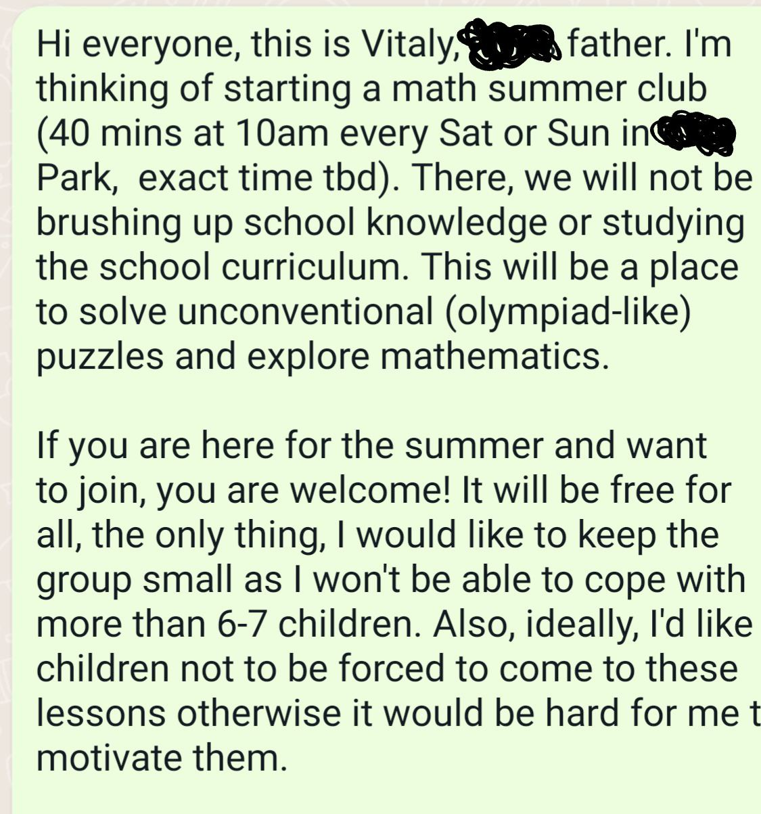

This is a 2023 twitter thread moved to my homepage for posterity + a couple of new points.
It's been almost a year since I started a math club with a couple of children from my son's class. This is the thread about how I run it, a list of recommended resources and some other related stuff. It started long time ago in a parent whatsapp group far, far away:

The club is free for multiple reasons, starting with being accessible for all, and ending with avoiding any admin work related to taxes etc. Boys & girls are equally represented in the club. However, there were a couple of rules for parents:
The common theme of the club is developing imagination. I haven't read much research on this, but personally for me, being able to imagine stuff or build a mental model helps a lot. This influences the types of problems we solve: most of them have some physical grounding
I made it look cool to explain your solution in front of the whiteboard. The way I did it was to make children who wanted to explain play rock paper scissors, so that the winner explains. I think it's a great opportunity for them to develop an ability to explain stuff. Every week there is an A4 with problems, and we spend first 20+ mins to discuss the solutions and some related topics: one day we were speaking about the sum of angles in a triangle, and I asked the children to generalise this to quadrilateral which brought us to proofs.
At the very end, we usually played Bulls and Cows or a similar game, where we have to guess a word from the given list instead. Children are usually super excited about the game and we sometimes play teams where they discuss their strategy. oThese are the resources I found super useful to keep the club running:
After a year, I decided to try something different: explore different math areas. We started with Graph Theory which is IMO well-suited for children: it's visual, it's quite simple conceptually, but it requires reasoning, learning new concepts, and explaining your thoughts to others. First, we looked into the definition of a graph using an amazing manual by Joel David Hamkins. This was well received, the children were interested and they loved coming up with examples and counterexamples. Then we looked into graph and map colouring. Again, we used an amazing kit from the same author. I intentionally swapped the ordering between this one and the first as I wanted to introduce the concept of a graph first. After all of this, we learnt walks and cycles, played with the Seven Bridges problem. We did a lot of examples for the handshaking lemma.
The hardest concept to explain here was to understand what a "theorem" is. I used this amazing dissertation to prepare the homework and examples. At the last week of the graph theory block, I gave everyone a dice and we were drawing random graphs on graphs of six vertices. Kids loved it! I should have probably given them coloured pencils to make it more visual, but it was a hit even without. For the homework, I gave them problems that develop an ability to transfer a real-life problem into a graph model, i.e. given a computer network with some connectivity, they were to find the most important computer or a computer.
In total, we looked into many topics throughout the year. I tried to find it as visual and hands on as possible. With geometry, we learnt shapes and different kinds of symmetry looking for real-life examples of it (I want them to be ready for the 5G book by Bronstein et al. when it is published, after all!). Then we jumped onto probability. It was, actually, not easy. At this level, probability depends on combinatorics a lot (you need to figure out how many options in total are there). Then we looked into functions, I introduced functions as boxes/gadgets that take some inputs and do some outputs. We introspected those boxes by making function plots for given formulas. We learnt how to define linear and quadratic functions.
When looking at functions, we were flying my son's quadcopter figuring out the speed of it given time and distance. The we switched onto Boolean logic and solved lots of puzzles: Knights and Knaves became our friends. And then we looked at Fractals. This was one of the most popular lessons, my son was flabbergasted. He was watching trippy videos with Mandelbrot sets hypnotised. After I got them curious, we studied complex numbers, and, together with the knowledge of functions, we made an attempt to understand how the Mandelbrot set is constructed. We had a lot of fun!
I think, this was a success! The kids were engaged, they learnt new stuff, and, I hope, they got more curious. Hopefully, some of them will go and learn more maths in their lives.